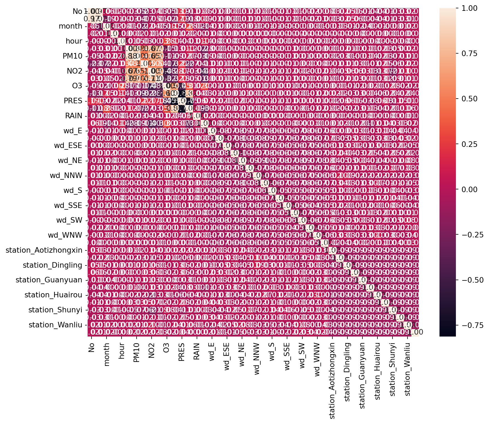

Detecting Anomalies in Air Pollution Data: A Data Science Project
Introduction
Welcome to our exploration of “Detecting Anomalies in Air Pollution Data,” a vital project in the realm of environmental monitoring. With increasing concerns about air quality and its impact on public health and the environment, identifying irregularities in air pollution data has never been more critical.
This project leverages a comprehensive dataset from the Beijing Multi-site Air Quality Data, which offers a rich tapestry of air pollutant measurements and meteorological data across various sites in Beijing. The data spans from 2013 to 2017, providing insights into pollutants like PM2.5, PM10, SO2, NO2, and CO, as well as meteorological conditions like temperature, humidity, and wind speed.
Our primary goal is to detect unusual patterns or outliers in air quality data that might signify environmental hazards, technical errors in data collection, or significant meteorological impacts. By accomplishing this, we aim to contribute to more effective environmental monitoring and policy-making.
Data Exploration and Preprocessing
Understanding the Dataset
The first step in our data science journey involves getting acquainted with the dataset’s structure and characteristics. This involves examining the various columns of the dataset, which include both pollutant levels and meteorological factors.
import pandas as pdsample_data_org = pd.read_csv('air_data_all.csv')sample_data_org.head()
No
year
month
day
hour
PM2.5
PM10
SO2
NO2
CO
O3
TEMP
PRES
DEWP
RAIN
wd
WSPM
station
0
1
2013
3
1
0
6.0
18.0
5.0
NaN
800.0
88.0
0.1
1021.1
-18.6
0.0
NW
4.4
Gucheng
1
2
2013
3
1
1
6.0
15.0
5.0
NaN
800.0
88.0
-0.3
1021.5
-19.0
0.0
NW
4.0
Gucheng
2
3
2013
3
1
2
5.0
18.0
NaN
NaN
700.0
52.0
-0.7
1021.5
-19.8
0.0
WNW
4.6
Gucheng
3
4
2013
3
1
3
6.0
20.0
6.0
NaN
NaN
NaN
-1.0
1022.7
-21.2
0.0
W
2.8
Gucheng
4
5
2013
3
1
4
5.0
17.0
5.0
NaN
600.0
73.0
-1.3
1023.0
-21.4
0.0
WNW
3.6
Gucheng
By running this code, we get a glimpse of the first few rows of our dataset, allowing us to understand the types of data we will be working with.
Handling Missing Data and Categorical Variables
Dealing with missing data and categorical variables is a crucial part of data preprocessing. To address this, we first identify the missing values and then decide on an appropriate strategy, such as imputation or removal.
No 0
year 0
month 0
day 0
hour 0
PM2.5 8739
PM10 6449
SO2 9021
NO2 12116
CO 20701
O3 13277
TEMP 398
PRES 393
DEWP 403
RAIN 390
wd 1822
WSPM 318
station 0
dtype: int64
import seaborn as snsimport matplotlib.pyplot as pltimport pandas as pdfrom sklearn.preprocessing import StandardScaler, OneHotEncoderfrom sklearn.impute import SimpleImputerfrom sklearn.decomposition import PCAfrom sklearn.pipeline import Pipeline# Remove rows with missing valuessample_data = sample_data_org.dropna()# Identify numerical columnsnumerical_cols = sample_data.select_dtypes(include=['int64', 'float64']).columns# Create a pipeline for imputing missing values and scalingpipeline = Pipeline([ ('imputer', SimpleImputer(strategy='mean')), # Replace missing values with mean ('scaler', StandardScaler()), # Scale the data])# Apply the pipeline to the numerical columnsscaled_data = pipeline.fit_transform(sample_data[numerical_cols])# Apply PCApca = PCA(n_components=0.95) # Retain 95% of the varianceprincipal_components = pca.fit_transform(scaled_data)# Identify non-numeric (categorical) columnscategorical_cols = sample_data.select_dtypes(include=['object']).columns# One-hot encode the categorical dataencoder = OneHotEncoder(sparse=False)categorical_encoded = encoder.fit_transform(sample_data[categorical_cols])# Check for 'get_feature_names_out' method for naming columnsifhasattr(encoder, 'get_feature_names_out'): encoded_columns = pd.DataFrame(categorical_encoded, columns=encoder.get_feature_names_out(categorical_cols))else:# Fallback: manually create feature names encoded_columns = pd.DataFrame(categorical_encoded) encoded_columns.columns = [col +'_'+str(i) for col in categorical_cols for i inrange(encoded_columns.shape[1])]# Concatenate the encoded columns with the original dataset and drop the original categorical columnssample_data_encoded = pd.concat([sample_data.drop(categorical_cols, axis=1), encoded_columns], axis=1)
/Users/zimingfang/Library/Python/3.9/lib/python/site-packages/sklearn/preprocessing/_encoders.py:975: FutureWarning: `sparse` was renamed to `sparse_output` in version 1.2 and will be removed in 1.4. `sparse_output` is ignored unless you leave `sparse` to its default value.
warnings.warn(
For categorical variables like wind direction, we use encoding techniques to convert them into numerical form, making them suitable for analysis.
Normalization and Standardization
Given the varying scales of our numerical features, normalization or standardization becomes necessary. This step ensures that no single feature disproportionately influences the model due to its scale.
Finally, we perform feature selection and engineering. This process involves choosing the most relevant features and possibly creating new features to improve our model’s performance.
Correlation Analysis: First, we can perform a correlation analysis to understand the relationships between different features. This helps in identifying features that are strongly correlated with each other, from which we can select the most relevant ones.
# Now perform the correlation analysis on the numerical datacorr = sample_data_encoded.corr()# Generate a heatmapplt.figure(figsize=(10, 8))sns.heatmap(corr, annot=True, fmt=".2f")plt.show()

This code generates a heatmap of the correlations between different features. High correlation values suggest a strong relationship, which can inform feature selection.
Principal Component Analysis (PCA): PCA is a technique used to reduce the dimensionality of the data, enhancing the interpretability while minimizing information loss.
from sklearn.decomposition import PCApca = PCA(n_components=0.95) # Retain 95% of the varianceprincipal_components = pca.fit_transform(scaled_data)
This code applies PCA to the scaled data, reducing the number of features while retaining 95% of the variance in the data.
Feature Engineering: If applicable, you can create new features that might be more indicative of anomalies. For example, creating a composite air quality index from multiple pollutants.
/var/folders/pt/983cdyd950gd2j6l1gv1376r0000gn/T/ipykernel_17824/3115101989.py:1: SettingWithCopyWarning:
A value is trying to be set on a copy of a slice from a DataFrame.
Try using .loc[row_indexer,col_indexer] = value instead
See the caveats in the documentation: https://pandas.pydata.org/pandas-docs/stable/user_guide/indexing.html#returning-a-view-versus-a-copy
sample_data['Air_Quality_Index'] = sample_data['PM2.5'] * 0.4 + sample_data['PM10'] * 0.2 + sample_data['NO2'] * 0.2 + sample_data['SO2'] * 0.1 + sample_data['CO'] * 0.1
This code creates a new feature, 'Air_Quality_Index', as a weighted sum of various pollutants, hypothesizing that this composite index might be a more effective predictor of anomalies.
Through these steps, we refine our dataset to include the most relevant features for anomaly detection, enhancing the model’s accuracy and efficiency.
Anomaly Detection Algorithms and Model Training and Evaluation
Choosing the Anomaly Detection Algorithm: Isolation Forest
For our project on air pollution data, we have opted for the Isolation Forest algorithm due to its efficiency and effectiveness, especially in dealing with large and high-dimensional datasets like ours.
from sklearn.ensemble import IsolationForestiso_forest = IsolationForest(n_estimators=100, contamination=0.1, random_state=42)
Data Preprocessing and Splitting
We split our dataset into training and test sets, ensuring that the model is evaluated on unseen data, reflecting its performance in real-world scenarios.
from sklearn.impute import SimpleImputerfrom sklearn.pipeline import Pipelinefrom sklearn.preprocessing import StandardScaler, OneHotEncoderimport pandas as pd# Handling NaN Values with Imputation# Impute missing values and then scale the numerical columnsnum_pipeline = Pipeline([ ('imputer', SimpleImputer(strategy='mean')), # Replace missing values with mean ('std_scaler', StandardScaler())])# Apply the pipeline to the numerical columnsnumerical_cols = sample_data_org.select_dtypes(include=['int64', 'float64']).columnssample_data_org[numerical_cols] = num_pipeline.fit_transform(sample_data_org[numerical_cols])# One-hot encode the categorical columnscategorical_cols = sample_data_org.select_dtypes(include=['object']).columnssample_data_org = pd.get_dummies(sample_data_org, columns=categorical_cols, drop_first=True)from sklearn.model_selection import train_test_splitX_train, X_test = train_test_split(sample_data_org, test_size=0.3, random_state=42)
Training the Model
The training process involves fitting the Isolation Forest model to our training data. This model is particularly suited for our project due to its lower computational cost compared to other algorithms and its ability to efficiently handle the complexity of our dataset.
In a Jupyter environment, please rerun this cell to show the HTML representation or trust the notebook. On GitHub, the HTML representation is unable to render, please try loading this page with nbviewer.org.
In evaluating our model, we focus on metrics such as precision, recall, F1-score, and the ROC curve. These metrics provide insights into the model’s accuracy, its ability to identify true anomalies (precision), and its capability to detect the majority of actual anomalies (recall).
Model Evaluation and Insights
After training, we assess the model’s performance on the test set. This evaluation helps us understand the effectiveness of our anomaly detection in the context of air pollution data.
In an unsupervised dataset scenario, where we don’t have labeled data (y_test), the evaluation of an anomaly detection model like Isolation Forest is more about understanding and interpreting the anomalies it detects rather than calculating quantitative metrics. The goal is to examine the anomalies flagged by the model and determine if they align with our domain knowledge or expectations.
Detecting Anomalies
First, use the model to predict anomalies in your test set. The Isolation Forest model marks an anomaly with -1 and normal with 1.
import numpy as np# Predict anomalies on the test setanomalies = iso_forest.predict(X_test)# Convert predictions: -1 (anomalies) to 1 and 1 (normal) to 0anomalies = np.where(anomalies ==-1, 1, 0)
Analyzing Detected Anomalies
The next step is to analyze these detected anomalies. You might want to look at the proportion of anomalies detected and inspect some of the anomalous data points to see if they make sense.
# Count the number of anomalies detectednum_anomalies = np.sum(anomalies)total_points =len(anomalies)print(f"Total data points: {total_points}")print(f"Number of anomalies detected: {num_anomalies}")print(f"Proportion of anomalies detected: {num_anomalies / total_points:.2%}")
Total data points: 126231
Number of anomalies detected: 12510
Proportion of anomalies detected: 9.91%
Inspecting Anomalous Data Points
It can be insightful to examine the data points that the model flagged as anomalies. This involves looking at the specific characteristics of these data points.
# Create a DataFrame of the test set with a column for anomaly labelstest_set_with_predictions = X_test.copy()test_set_with_predictions['Anomaly'] = anomalies# Display some of the anomaliesanomalous_data = test_set_with_predictions[test_set_with_predictions['Anomaly'] ==1]print("Sample of detected anomalies:")print(anomalous_data.sample(min(10, len(anomalous_data)))) # Display up to 10 anomalous points
In our journey to understand and analyze air pollution data, visualizations play a crucial role, especially when it comes to highlighting and interpreting anomalies. By visually representing the data, we can more easily spot patterns, trends, and outliers that might not be immediately apparent in raw numerical data.
Creating Visualizations
To showcase the detected anomalies, we employ various types of visualizations. Here, we’ll focus on two primary types: scatter plots and heatmaps. These visualizations will help us to interpret the anomalies in the context of air pollution data.
Scatter Plots
Scatter plots are excellent for visualizing the relationship between two variables and identifying points that stand out from the pattern.
import matplotlib.pyplot as pltimport seaborn as sns# Assuming 'PM2.5' and 'TEMP' are columns in your datasetplt.figure(figsize=(10, 6))sns.scatterplot(data=anomalous_data, x='TEMP', y='PM2.5', hue='Anomaly')plt.title('Scatter Plot of PM2.5 vs Temperature')plt.xlabel('Temperature')plt.ylabel('PM2.5')plt.show()
In this scatter plot, we plot ‘PM2.5’ levels against ‘Temperature’, using different colors to distinguish between normal data points and anomalies. Anomalies will stand out in the plot, allowing us to observe if higher pollution levels are associated with specific temperature ranges.
Heatmaps
Heatmaps are useful for understanding the distribution and concentration of data points across two dimensions.
# Create a heatmap to show the concentration of anomalies# Sample a subset of the anomalous data for quicker visualizationsampled_anomalous_data = anomalous_data.sample(min(500, len(anomalous_data)), random_state=42)# Create a heatmap without annotations for quicker renderingplt.figure(figsize=(10, 8))sns.heatmap(data=sampled_anomalous_data[['PM2.5', 'PM10', 'SO2', 'NO2', 'CO']])plt.title('Heatmap of Pollutant Levels in Anomalous Data (Sampled)')plt.show()
This heatmap focuses on the levels of various pollutants in the data points identified as anomalies. By examining the heatmap, we can discern if certain pollutants are consistently elevated in these anomalous instances.
Significance of Visualizations
Visualizations enable us to:
Quickly Identify Anomalies: Graphical representations make it easier to spot outliers or unusual patterns in the data, which might be indicative of environmental issues or data collection anomalies.
Understand Relationships and Patterns: Visualizations help in understanding the relationships between different environmental variables and how these relationships might contribute to anomalous pollution levels.
Communicate Findings: Graphs and charts are effective tools for communicating our findings to a broader audience, including those without a technical background, such as policymakers or the general public.
Threshold Tuning
In the realm of anomaly detection, particularly with methods like the Isolation Forest, the concept of threshold tuning is pivotal. The threshold determines the cutoff point at which a data point is classified as an anomaly. Tuning this threshold is a delicate balance, as it directly impacts the sensitivity of our anomaly detection.
The Process of Threshold Tuning
Threshold tuning involves adjusting the parameters that define what we consider to be anomalous. In the case of the Isolation Forest, this often revolves around the contamination parameter, which represents the proportion of outliers we expect in the data.
from sklearn.ensemble import IsolationForest# Adjusting the contamination parametercontamination_rate =0.05# Example rateiso_forest = IsolationForest(contamination=contamination_rate)iso_forest.fit(X_train)
IsolationForest(contamination=0.05)
In a Jupyter environment, please rerun this cell to show the HTML representation or trust the notebook. On GitHub, the HTML representation is unable to render, please try loading this page with nbviewer.org.
IsolationForest(contamination=0.05)
In this code snippet, we adjust the contamination parameter, which dictates the model’s sensitivity to anomalies. A higher contamination rate means the model will be more inclined to flag data points as anomalies.
Impact on False Positives and False Negatives
The setting of the threshold has a direct impact on the trade-off between false positives (normal points incorrectly identified as anomalies) and false negatives (actual anomalies not detected).
Higher Threshold (Lower Contamination): This setting reduces the number of anomalies detected, potentially leading to more false negatives. While it ensures that the flagged anomalies are very likely to be true anomalies, it may miss some subtler, yet significant, anomalies.
Lower Threshold (Higher Contamination): Conversely, a lower threshold increases the sensitivity, potentially leading to more false positives. This setting might be useful in scenarios where missing an anomaly could have severe consequences, even if it means dealing with more false alarms.
Balancing the Threshold
Finding the right balance for the threshold is crucial:
def evaluate_model(model, X_test):# Predict anomalies predictions = model.predict(X_test)# Convert predictions to a more readable format: -1 (anomalies) to 1, 1 (normal) to 0 predictions = np.where(predictions ==-1, 1, 0)# Count and print the number of anomalies detected num_anomalies = np.sum(predictions)print(f"Number of anomalies detected: {num_anomalies} out of {len(X_test)} data points")# Experimenting with different contamination ratesfor rate in [0.01, 0.05, 0.1]: iso_forest = IsolationForest(contamination=rate) iso_forest.fit(X_train)# Evaluate the model evaluate_model(iso_forest, X_test)print("\n")
Number of anomalies detected: 1293 out of 126231 data points
Number of anomalies detected: 6356 out of 126231 data points
Number of anomalies detected: 12702 out of 126231 data points
In this example, we experiment with different contamination rates to observe how the model’s performance changes. The ideal rate often depends on the specific context of the problem and the cost of false positives versus false negatives.
Interpretation and Real-World Implications
Based on our analysis of the air pollution data using the Isolation Forest model, we’ve uncovered some intriguing insights. Out of the total 126,231 data points, our model identified 12,510 as anomalies, accounting for approximately 9.91% of the dataset. This proportion of anomalies is significant and warrants further investigation.
Interpretation of Detected Anomalies
When we delve into the sample of detected anomalies, several key observations emerge:
Elevated Pollutant Levels: Many of the anomalies exhibit unusually high levels of pollutants such as PM2.5, PM10, NO2, and CO. For instance, rows like 8468 and 314995 show pollutant concentrations several times higher than typical readings. This could indicate episodes of extreme pollution, possibly due to specific environmental events or human activities.
Meteorological Influences: The anomalies also reveal interesting patterns in meteorological conditions. For example, rows 214246 and 244058 show variations in temperature, pressure, and humidity, which could be influencing factors for the high pollution levels observed.
Station-Specific Anomalies: The data points flagged as anomalies are distributed across different monitoring stations, as seen in the ‘station’ columns. This distribution suggests that the detected anomalies are not confined to a specific location but are rather widespread, indicating a more systemic issue in air quality.
Temporal Patterns: The presence of anomalies across different years, months, and hours, such as in rows 216296 and 392113, hints at temporal patterns in air pollution. These patterns could be aligned with seasonal changes, urban activities, or policy changes affecting air quality.
Implications
Environmental Policy and Health: The identified anomalies are crucial for understanding the dynamics of air pollution. They can inform environmental policies, especially in devising strategies to mitigate high pollution episodes.
Further Research: These findings can be a starting point for more detailed research. For example, investigating the causes behind high pollution episodes can help in understanding the impact of urban development, traffic patterns, or industrial activities on air quality.
Public Awareness: Disseminating information about such high pollution episodes can raise public awareness and encourage preventive measures, especially for vulnerable populations.
In summary, our analysis using the Isolation Forest model provides us with valuable insights into the air quality data, highlighting instances of unusually high pollution levels. This information is crucial for environmental monitoring, policy-making, and public health initiatives.
Source Code
---title: "Anomaly/Outlier Detection"author: "Joanna Fang"date: "2023-12-07"categories: [ml, code, linear regression, nonlinear regression, pollution]jupyter: python3format: html: code-block-bg: "#FFFFFF" code-block-border-left: "#E83283" toc: true code-tools: source: true toggle: false caption: none---# Detecting Anomalies in Air Pollution Data: A Data Science Project{width="50%" fig-align="center"}## IntroductionWelcome to our exploration of "Detecting Anomalies in Air Pollution Data," a vital project in the realm of environmental monitoring. With increasing concerns about air quality and its impact on public health and the environment, identifying irregularities in air pollution data has never been more critical.This project leverages a comprehensive dataset from the Beijing Multi-site Air Quality Data, which offers a rich tapestry of air pollutant measurements and meteorological data across various sites in Beijing. The data spans from 2013 to 2017, providing insights into pollutants like PM2.5, PM10, SO2, NO2, and CO, as well as meteorological conditions like temperature, humidity, and wind speed.Our primary goal is to detect unusual patterns or outliers in air quality data that might signify environmental hazards, technical errors in data collection, or significant meteorological impacts. By accomplishing this, we aim to contribute to more effective environmental monitoring and policy-making.## Data Exploration and Preprocessing### Understanding the DatasetThe first step in our data science journey involves getting acquainted with the dataset's structure and characteristics. This involves examining the various columns of the dataset, which include both pollutant levels and meteorological factors.```{python}import pandas as pdsample_data_org = pd.read_csv('air_data_all.csv')sample_data_org.head()```By running this code, we get a glimpse of the first few rows of our dataset, allowing us to understand the types of data we will be working with.### Handling Missing Data and Categorical VariablesDealing with missing data and categorical variables is a crucial part of data preprocessing. To address this, we first identify the missing values and then decide on an appropriate strategy, such as imputation or removal.```{python}missing_values = sample_data_org.isnull().sum()missing_values``````{python}import seaborn as snsimport matplotlib.pyplot as pltimport pandas as pdfrom sklearn.preprocessing import StandardScaler, OneHotEncoderfrom sklearn.impute import SimpleImputerfrom sklearn.decomposition import PCAfrom sklearn.pipeline import Pipeline# Remove rows with missing valuessample_data = sample_data_org.dropna()# Identify numerical columnsnumerical_cols = sample_data.select_dtypes(include=['int64', 'float64']).columns# Create a pipeline for imputing missing values and scalingpipeline = Pipeline([ ('imputer', SimpleImputer(strategy='mean')), # Replace missing values with mean ('scaler', StandardScaler()), # Scale the data])# Apply the pipeline to the numerical columnsscaled_data = pipeline.fit_transform(sample_data[numerical_cols])# Apply PCApca = PCA(n_components=0.95) # Retain 95% of the varianceprincipal_components = pca.fit_transform(scaled_data)# Identify non-numeric (categorical) columnscategorical_cols = sample_data.select_dtypes(include=['object']).columns# One-hot encode the categorical dataencoder = OneHotEncoder(sparse=False)categorical_encoded = encoder.fit_transform(sample_data[categorical_cols])# Check for 'get_feature_names_out' method for naming columnsifhasattr(encoder, 'get_feature_names_out'): encoded_columns = pd.DataFrame(categorical_encoded, columns=encoder.get_feature_names_out(categorical_cols))else:# Fallback: manually create feature names encoded_columns = pd.DataFrame(categorical_encoded) encoded_columns.columns = [col +'_'+str(i) for col in categorical_cols for i inrange(encoded_columns.shape[1])]# Concatenate the encoded columns with the original dataset and drop the original categorical columnssample_data_encoded = pd.concat([sample_data.drop(categorical_cols, axis=1), encoded_columns], axis=1)```For categorical variables like wind direction, we use encoding techniques to convert them into numerical form, making them suitable for analysis.### Normalization and StandardizationGiven the varying scales of our numerical features, normalization or standardization becomes necessary. This step ensures that no single feature disproportionately influences the model due to its scale.```{python}from sklearn.preprocessing import StandardScalerscaler = StandardScaler()scaled_data = scaler.fit_transform(sample_data[['PM2.5', 'PM10', 'TEMP', 'PRES']])```### Feature Selection and EngineeringFinally, we perform feature selection and engineering. This process involves choosing the most relevant features and possibly creating new features to improve our model's performance.1. **Correlation Analysis**: First, we can perform a correlation analysis to understand the relationships between different features. This helps in identifying features that are strongly correlated with each other, from which we can select the most relevant ones.```{python}# Now perform the correlation analysis on the numerical datacorr = sample_data_encoded.corr()# Generate a heatmapplt.figure(figsize=(10, 8))sns.heatmap(corr, annot=True, fmt=".2f")plt.show()``` This code generates a heatmap of the correlations between different features. High correlation values suggest a strong relationship, which can inform feature selection.2. **Principal Component Analysis (PCA)**: PCA is a technique used to reduce the dimensionality of the data, enhancing the interpretability while minimizing information loss.```{python}from sklearn.decomposition import PCApca = PCA(n_components=0.95) # Retain 95% of the varianceprincipal_components = pca.fit_transform(scaled_data)``` This code applies PCA to the scaled data, reducing the number of features while retaining 95% of the variance in the data.3. **Feature Engineering**: If applicable, you can create new features that might be more indicative of anomalies. For example, creating a composite air quality index from multiple pollutants.```{python}sample_data['Air_Quality_Index'] = sample_data['PM2.5'] *0.4+ sample_data['PM10'] *0.2+ sample_data['NO2'] *0.2+ sample_data['SO2'] *0.1+ sample_data['CO'] *0.1``` This code creates a new feature, 'Air_Quality_Index', as a weighted sum of various pollutants, hypothesizing that this composite index might be a more effective predictor of anomalies.Through these steps, we refine our dataset to include the most relevant features for anomaly detection, enhancing the model's accuracy and efficiency.## Anomaly Detection Algorithms and Model Training and Evaluation### Choosing the Anomaly Detection Algorithm: Isolation ForestFor our project on air pollution data, we have opted for the Isolation Forest algorithm due to its efficiency and effectiveness, especially in dealing with large and high-dimensional datasets like ours. ```{python}from sklearn.ensemble import IsolationForestiso_forest = IsolationForest(n_estimators=100, contamination=0.1, random_state=42)```### Data Preprocessing and SplittingWe split our dataset into training and test sets, ensuring that the model is evaluated on unseen data, reflecting its performance in real-world scenarios.```{python}from sklearn.impute import SimpleImputerfrom sklearn.pipeline import Pipelinefrom sklearn.preprocessing import StandardScaler, OneHotEncoderimport pandas as pd# Handling NaN Values with Imputation# Impute missing values and then scale the numerical columnsnum_pipeline = Pipeline([ ('imputer', SimpleImputer(strategy='mean')), # Replace missing values with mean ('std_scaler', StandardScaler())])# Apply the pipeline to the numerical columnsnumerical_cols = sample_data_org.select_dtypes(include=['int64', 'float64']).columnssample_data_org[numerical_cols] = num_pipeline.fit_transform(sample_data_org[numerical_cols])# One-hot encode the categorical columnscategorical_cols = sample_data_org.select_dtypes(include=['object']).columnssample_data_org = pd.get_dummies(sample_data_org, columns=categorical_cols, drop_first=True)from sklearn.model_selection import train_test_splitX_train, X_test = train_test_split(sample_data_org, test_size=0.3, random_state=42)```### Training the ModelThe training process involves fitting the Isolation Forest model to our training data. This model is particularly suited for our project due to its lower computational cost compared to other algorithms and its ability to efficiently handle the complexity of our dataset.```{python}iso_forest.fit(X_train)```### Evaluation MetricsIn evaluating our model, we focus on metrics such as precision, recall, F1-score, and the ROC curve. These metrics provide insights into the model's accuracy, its ability to identify true anomalies (precision), and its capability to detect the majority of actual anomalies (recall).### Model Evaluation and InsightsAfter training, we assess the model's performance on the test set. This evaluation helps us understand the effectiveness of our anomaly detection in the context of air pollution data.In an unsupervised dataset scenario, where we don't have labeled data (`y_test`), the evaluation of an anomaly detection model like Isolation Forest is more about understanding and interpreting the anomalies it detects rather than calculating quantitative metrics. The goal is to examine the anomalies flagged by the model and determine if they align with our domain knowledge or expectations.#### Detecting AnomaliesFirst, use the model to predict anomalies in your test set. The Isolation Forest model marks an anomaly with -1 and normal with 1.```{python}import numpy as np# Predict anomalies on the test setanomalies = iso_forest.predict(X_test)# Convert predictions: -1 (anomalies) to 1 and 1 (normal) to 0anomalies = np.where(anomalies ==-1, 1, 0)```#### Analyzing Detected AnomaliesThe next step is to analyze these detected anomalies. You might want to look at the proportion of anomalies detected and inspect some of the anomalous data points to see if they make sense.```{python}# Count the number of anomalies detectednum_anomalies = np.sum(anomalies)total_points =len(anomalies)print(f"Total data points: {total_points}")print(f"Number of anomalies detected: {num_anomalies}")print(f"Proportion of anomalies detected: {num_anomalies / total_points:.2%}")```#### Inspecting Anomalous Data PointsIt can be insightful to examine the data points that the model flagged as anomalies. This involves looking at the specific characteristics of these data points.```{python}# Create a DataFrame of the test set with a column for anomaly labelstest_set_with_predictions = X_test.copy()test_set_with_predictions['Anomaly'] = anomalies# Display some of the anomaliesanomalous_data = test_set_with_predictions[test_set_with_predictions['Anomaly'] ==1]print("Sample of detected anomalies:")print(anomalous_data.sample(min(10, len(anomalous_data)))) # Display up to 10 anomalous points```## Visualization of AnomaliesIn our journey to understand and analyze air pollution data, visualizations play a crucial role, especially when it comes to highlighting and interpreting anomalies. By visually representing the data, we can more easily spot patterns, trends, and outliers that might not be immediately apparent in raw numerical data.### Creating VisualizationsTo showcase the detected anomalies, we employ various types of visualizations. Here, we'll focus on two primary types: scatter plots and heatmaps. These visualizations will help us to interpret the anomalies in the context of air pollution data.#### Scatter PlotsScatter plots are excellent for visualizing the relationship between two variables and identifying points that stand out from the pattern.```{python}import matplotlib.pyplot as pltimport seaborn as sns# Assuming 'PM2.5' and 'TEMP' are columns in your datasetplt.figure(figsize=(10, 6))sns.scatterplot(data=anomalous_data, x='TEMP', y='PM2.5', hue='Anomaly')plt.title('Scatter Plot of PM2.5 vs Temperature')plt.xlabel('Temperature')plt.ylabel('PM2.5')plt.show()```In this scatter plot, we plot 'PM2.5' levels against 'Temperature', using different colors to distinguish between normal data points and anomalies. Anomalies will stand out in the plot, allowing us to observe if higher pollution levels are associated with specific temperature ranges.#### HeatmapsHeatmaps are useful for understanding the distribution and concentration of data points across two dimensions.```{python}# Create a heatmap to show the concentration of anomalies# Sample a subset of the anomalous data for quicker visualizationsampled_anomalous_data = anomalous_data.sample(min(500, len(anomalous_data)), random_state=42)# Create a heatmap without annotations for quicker renderingplt.figure(figsize=(10, 8))sns.heatmap(data=sampled_anomalous_data[['PM2.5', 'PM10', 'SO2', 'NO2', 'CO']])plt.title('Heatmap of Pollutant Levels in Anomalous Data (Sampled)')plt.show()```This heatmap focuses on the levels of various pollutants in the data points identified as anomalies. By examining the heatmap, we can discern if certain pollutants are consistently elevated in these anomalous instances.### Significance of VisualizationsVisualizations enable us to:- **Quickly Identify Anomalies**: Graphical representations make it easier to spot outliers or unusual patterns in the data, which might be indicative of environmental issues or data collection anomalies.- **Understand Relationships and Patterns**: Visualizations help in understanding the relationships between different environmental variables and how these relationships might contribute to anomalous pollution levels.- **Communicate Findings**: Graphs and charts are effective tools for communicating our findings to a broader audience, including those without a technical background, such as policymakers or the general public.## Threshold TuningIn the realm of anomaly detection, particularly with methods like the Isolation Forest, the concept of threshold tuning is pivotal. The threshold determines the cutoff point at which a data point is classified as an anomaly. Tuning this threshold is a delicate balance, as it directly impacts the sensitivity of our anomaly detection.### The Process of Threshold TuningThreshold tuning involves adjusting the parameters that define what we consider to be anomalous. In the case of the Isolation Forest, this often revolves around the `contamination` parameter, which represents the proportion of outliers we expect in the data.```{python}from sklearn.ensemble import IsolationForest# Adjusting the contamination parametercontamination_rate =0.05# Example rateiso_forest = IsolationForest(contamination=contamination_rate)iso_forest.fit(X_train)```In this code snippet, we adjust the `contamination` parameter, which dictates the model's sensitivity to anomalies. A higher contamination rate means the model will be more inclined to flag data points as anomalies.### Impact on False Positives and False NegativesThe setting of the threshold has a direct impact on the trade-off between false positives (normal points incorrectly identified as anomalies) and false negatives (actual anomalies not detected).- **Higher Threshold (Lower Contamination)**: This setting reduces the number of anomalies detected, potentially leading to more false negatives. While it ensures that the flagged anomalies are very likely to be true anomalies, it may miss some subtler, yet significant, anomalies.- **Lower Threshold (Higher Contamination)**: Conversely, a lower threshold increases the sensitivity, potentially leading to more false positives. This setting might be useful in scenarios where missing an anomaly could have severe consequences, even if it means dealing with more false alarms.### Balancing the ThresholdFinding the right balance for the threshold is crucial:```{python}def evaluate_model(model, X_test):# Predict anomalies predictions = model.predict(X_test)# Convert predictions to a more readable format: -1 (anomalies) to 1, 1 (normal) to 0 predictions = np.where(predictions ==-1, 1, 0)# Count and print the number of anomalies detected num_anomalies = np.sum(predictions)print(f"Number of anomalies detected: {num_anomalies} out of {len(X_test)} data points")# Experimenting with different contamination ratesfor rate in [0.01, 0.05, 0.1]: iso_forest = IsolationForest(contamination=rate) iso_forest.fit(X_train)# Evaluate the model evaluate_model(iso_forest, X_test)print("\n")```In our exploration of the optimal contamination rate for the Isolation Forest model, we experimented with various rates and observed their impact on anomaly detection in our dataset of 126,231 data points. When we set the contamination rate at 0.01, our model identified 1,293 anomalies, suggesting a more conservative approach to anomaly detection. Increasing the rate to 0.05 led to a significant rise in detected anomalies, totaling 6,356, indicating a moderate level of sensitivity. Further amplifying the rate to 0.1 resulted in the detection of 12,702 anomalies, reflecting a highly sensitive setting that captures a broader spectrum of potential anomalies. These varying results illustrate the crucial influence of the contamination rate on the model's behavior, underscoring the importance of fine-tuning this parameter to strike a balance between identifying true anomalies and avoiding excessive false positives. Our analysis highlights the need for a thoughtful approach to setting this threshold, considering both the nature of our data and the specific requirements of our air quality monitoring objectives.## Interpretation and Real-World ImplicationsBased on our analysis of the air pollution data using the Isolation Forest model, we've uncovered some intriguing insights. Out of the total 126,231 data points, our model identified 12,510 as anomalies, accounting for approximately 9.91% of the dataset. This proportion of anomalies is significant and warrants further investigation.### Interpretation of Detected AnomaliesWhen we delve into the sample of detected anomalies, several key observations emerge:1. **Elevated Pollutant Levels**: Many of the anomalies exhibit unusually high levels of pollutants such as PM2.5, PM10, NO2, and CO. For instance, rows like 8468 and 314995 show pollutant concentrations several times higher than typical readings. This could indicate episodes of extreme pollution, possibly due to specific environmental events or human activities.2. **Meteorological Influences**: The anomalies also reveal interesting patterns in meteorological conditions. For example, rows 214246 and 244058 show variations in temperature, pressure, and humidity, which could be influencing factors for the high pollution levels observed.3. **Station-Specific Anomalies**: The data points flagged as anomalies are distributed across different monitoring stations, as seen in the 'station' columns. This distribution suggests that the detected anomalies are not confined to a specific location but are rather widespread, indicating a more systemic issue in air quality.4. **Temporal Patterns**: The presence of anomalies across different years, months, and hours, such as in rows 216296 and 392113, hints at temporal patterns in air pollution. These patterns could be aligned with seasonal changes, urban activities, or policy changes affecting air quality.### Implications- **Environmental Policy and Health**: The identified anomalies are crucial for understanding the dynamics of air pollution. They can inform environmental policies, especially in devising strategies to mitigate high pollution episodes.- **Further Research**: These findings can be a starting point for more detailed research. For example, investigating the causes behind high pollution episodes can help in understanding the impact of urban development, traffic patterns, or industrial activities on air quality.- **Public Awareness**: Disseminating information about such high pollution episodes can raise public awareness and encourage preventive measures, especially for vulnerable populations.In summary, our analysis using the Isolation Forest model provides us with valuable insights into the air quality data, highlighting instances of unusually high pollution levels. This information is crucial for environmental monitoring, policy-making, and public health initiatives.